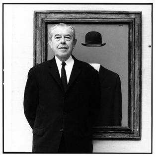

- Salvador Dalí
- Max Ernst
- René Magritte 
- André Masson
- Joan Miró
- Dorothea Tanning
- Hans Arp

Salvador Dalí i Domènech, 1º Marquês de Dalí de Púbol foi um importante pintor espanhol, conhecido pelo seu trabalho surrealista. O trabalho de Dalí chama a atenção pela incrível combinação de imagens bizarras, oníricas, com excelente qualidade plástica. Dalí foi influenciado pelos mestres do classicismo
Max Ernst foi um pintor, escultor e artista gráfico alemão. Foi um dos fundadores do Dadaísmo e mais tarde se uniu ao Movimento Surrealista. Max Ernst é considerado um dos grandes mestres do surrealismo e, juntamente com Pablo Picasso, um dos maiores e mais multifacetados artistas do século 20. Foi um dos representantes do dadaísmo. Em 1919 fundou com Hans Arp o movimento dadá de Colônia.
René Magritte foi um desenhista, ilustrador e pintor belga. Destacou-se entre os artistas surrealistas belgas, uma vez que pertenceu ao grupo de surrealistaprincipal e foi amigo de André Breton, Salvador Dalí, Marcel Duchamp e outros. Interessante saber que o artista era religiosamente agnóstico e politicamente de esquerda, mantendo vínculos estreitos com o partido comunista. Magritte se consagrou mundialmente, expondo em salões de renome, como no Palaisdes Beaux-Arts e Galerie Dietrich (Bruxelas), no London Gallery (Inglaterra) e no Museum of Modern Art (Nova Iorque).

André-Aimé-René Masson foi um artista francês. Começou os seus estudos de arte aos onze anos de idade, na Academia Real de Belas-Artes de Bruxelas, sob a tutela de Constant Montald. Durante a Primeira Guerra Mundial, lutou pela França e ficou severamente ferido.
O artista espanhol Joan Miró é um dos grandes nomes da pintura do século XX. Sua obra carrega simplicidade, equilíbrio e muitos elementos imaginativos. Com composições poéticas, muitas vezes trazendo explosões cromáticas, Miró produziu um trabalho inovador e tornou-se referência no movimento surrealista.

Dorothea Tanning foi uma pintora, escultora e escritora norte-americana. Ela também desenhou cenários e figurinos para balé e teatro. Seu pioneirismo e talento extraordinários foram por muito tempo ofuscados pelo título de primeira dama do surrealismo, fruto do seu casamento com Max Ernst.
Hans Arp foi um importante pintor, escultor e poeta franco-alemão. Considerado um dos principais representantes do dadaísmo e do surrealismo, criou a técnica de relevos cromados e foi um dos pioneiros da arte abstrata. É autor de importantes obras abstratas, tais como: Composição Abstrata, Cabeça com bigode, Configuração e Perigo da Morte.